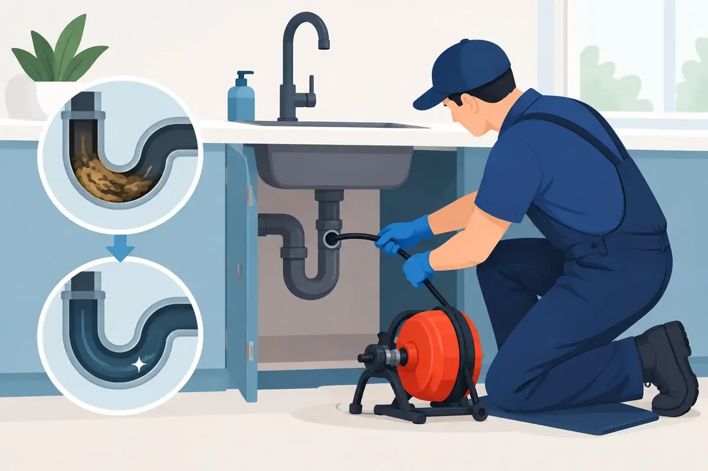

A slow kitchen sink can seem like a small inconvenience until the water stops draining altogether during dinner cleanup. A shower that holds water around your feet can become a safety concern. And when a toilet, tub, or floor drain backs up, drain cleaning becomes a matter of protecting your home or business from dirty water, property damage, and an unexpected interruption to the day.
Some clogs respond to simple care. Others are warning signs of a larger issue farther down the line. Knowing the difference can help you act before a minor drainage problem becomes a stressful cleanup.
What Causes Drains to Clog?
Most drain problems build gradually. In kitchens, cooking grease, food particles, soap residue, and coffee grounds can cling to pipe walls over time. Even grease that looks liquid when poured into a sink can cool and harden farther down the pipe.
Bathroom drains collect a different kind of buildup. Hair combines with soap scum, toothpaste, oils, and personal-care products to form a stubborn blockage. Toilets may clog because of excess paper, wipes labeled as flushable, hygiene products, or small objects that should never enter the plumbing system.
Outside, roots can find their way into tiny openings in sewer pipes, especially in older lines. Once roots reach the moisture inside, they continue growing and catch debris moving through the pipe. Soil movement, pipe deterioration, and damaged sewer connections can also restrict flow. In those cases, clearing the immediate blockage is useful, but finding the reason it happened is what protects the property long term.
When Drain Cleaning Is More Than a Simple Clog
One slow fixture does not always mean a sewer-line emergency. A single slow bathroom sink, for example, may have a localized hair or soap blockage near the drain. But several drains acting up at once deserve prompt attention.
If the toilet bubbles when the washing machine drains, water rises in the tub after flushing, or sewage appears at a floor drain, the issue may be in the main sewer line rather than one fixture. For a business, a backed-up restroom or kitchen drain can disrupt customers, employees, and daily operations. For a homeowner, it can expose flooring, walls, and belongings to contaminated water.
Call for professional help quickly when you notice recurring clogs, foul odors, gurgling sounds, water backing up in another fixture, or water around a floor drain. These symptoms can indicate a blockage that is beyond the reach of a plunger or a small hand-held drain tool.
Why Repeated Clogs Matter
A drain that clogs again soon after being cleared is telling you something. The blockage may not have been fully removed, or the pipe may have a condition that allows debris to collect in the same place. Scale buildup, grease accumulation, roots, a sagging pipe section, or a damaged line can all create repeat trouble.
Repeatedly forcing a drain open without understanding the cause can delay a necessary repair. It can also leave a property owner with a false sense of security until the next backup happens at the worst possible time.
The Problem With Chemical Drain Cleaners
Store-bought chemical drain cleaners are tempting because they promise a quick fix. Sometimes they may make a small clog seem better for a short time. The trade-off is that harsh chemicals can be hard on older pipes, seals, and fixtures, especially when used repeatedly or left sitting in a blocked line.
They also do not solve every kind of obstruction. Chemicals cannot remove a child’s toy from a toilet, cut through roots in a sewer line, correct a broken pipe, or reliably clear a dense grease blockage. If the product does not work, it can leave caustic liquid in the drain for the next person who tries to work on it.
A plunger can be a safer first step for a minor toilet or sink clog. Use a flange plunger for toilets and make sure there is enough water to create a seal. For a sink, removing and cleaning the stopper can also help. If water is backing up, though, avoid adding more water or using one fixture after another in hopes that the problem will move along.
What Professional Drain Cleaning Can Do
Professional drain cleaning begins with listening to what the property is experiencing. Which drains are slow? When did the problem begin? Is there gurgling, odor, or a backup in another room? Those details help a trained plumber determine whether the issue is local or likely connected to a larger branch or sewer line.
Depending on the situation, a plumber may use a drain machine to remove compacted buildup or a specialized cable to break through an obstruction. For heavier grease, scale, and residue, high-pressure water cleaning may be appropriate. The right method depends on the pipe material, the blockage, access points, and the condition of the plumbing system.
When a problem keeps returning or the line may be damaged, a camera inspection can provide valuable answers. Instead of guessing, the plumber can see whether roots, a cracked section, a separated connection, or buildup is affecting the line. That information allows the repair recommendation to match the actual condition of the pipe.
Good service is not simply getting water moving again. It is explaining what caused the problem, what was done, and what should happen next. Property owners deserve clear options and upfront information, particularly when a drain issue affects a family home or an operating business.
Drain Care That Helps Between Service Calls
Daily habits make a real difference, although they cannot prevent every plumbing issue. Keep grease, oils, and food scraps out of kitchen drains. Wipe greasy pans into the trash before washing them, and use a sink strainer to catch debris. In bathrooms, remove hair from sink and shower stoppers regularly.
Toilets should be used only for waste and toilet paper. Wipes, paper towels, cotton products, dental floss, and similar items can catch in pipes even when a package suggests they are flushable. In commercial restrooms, clear signage and properly placed waste containers can help reduce avoidable clogs.
For older homes or properties with mature trees, preventive service can be especially worthwhile. A scheduled inspection or cleaning may identify buildup or root intrusion before a main-line backup forces an emergency decision. The best schedule depends on the age of the plumbing, the property’s history, the number of occupants, and how the drains are used.
A Respectful Response When the Drains Cannot Wait
Drain emergencies are inconvenient enough without wondering who will enter your home or whether the work will be explained clearly. Angle Stop Plumbing serves Middle Tennessee homeowners and commercial property operators with respectful, family-friendly service, live-phone support, and 24/7 emergency availability. With 31 years of plumbing experience, the team works to identify the source of the problem, provide upfront pricing, and treat each customer’s property with care.
If sewage is backing up or water is spilling from a fixture, keep people and pets away from the affected area. Stop using water fixtures if possible, particularly if multiple drains are involved. Do not attempt to dismantle pipes or pour additional chemicals into a line that is already backing up.
A clear drain is more than a convenience. It helps keep the routines of your household, tenants, customers, or employees moving without the worry of what might come up next. Addressing the warning signs early gives you the best chance to protect your plumbing, your property, and your peace of mind.